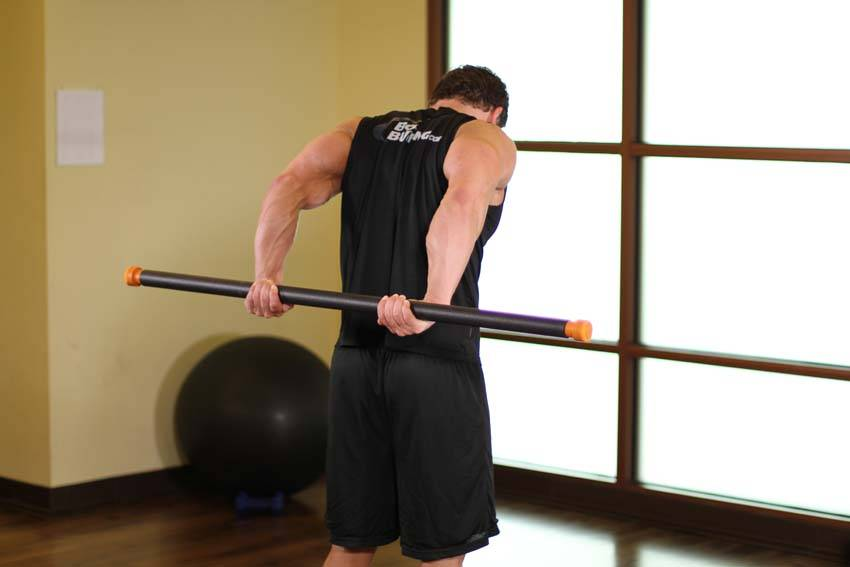

- Stand up straight with your legs together, holding a bodybar or broomstick.
- Hold the pole behind your hips with a wider than shoulder width grip. Your palms should be down and your thumbs facing out.
- Slowly lift your arms up behind your head. Don't force it if it gets hard to lift further.
This exercise appears in Programmd training programs. Take the quiz to find one for your gym.
Find your program